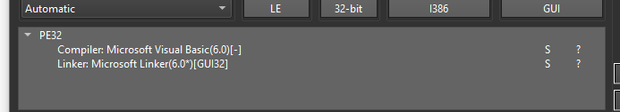

CTF:kkkklik.exe
A few weeks ago, the DEF CON CTF Qualifier for 2023 took place during the weekend. I was pretty bored and had nothing to do, so I decided to give the reversing challenge a try. Unfortunately, I was not able to find the flag within the given time limit. Still, I was able to learn a lot and had a lot of fun. Here’s an (incomplete) write-up for the challenge.
The file’s name is “kkkklik.exe — a Windows 32 bit binary. The objective given to us is to find the flag.
Analysis

Taking a look the binary information, we can see that it is Visual Basic file and a GUI application.
Upon opening the .exe file, we will only see a window displaying an image. No changes occur, but the window can be moved. The program is likely waiting for user interaction to continue. After the image is clicked, some events will occur depending on the condition.
First Condition — When click count reaches 1337:

Once the image is clicked 1337 times, we are asked for an encryption key.

I tried the value “A”, and it gave back the encrypted result like so.
“rJ8chUMRKeRQnDiY+7WPHMZv8CkPtr3A8UEk82lNk8l8anhURE3vuQ==”"
After taking time to test out different inputs, I gained a bit of an understanding of how the encryption algorithm worked.
Second Condition — When click count reaches 133337:
For the second condition, no message box appears. However, it seems that this is where the drawing functions are handled.

The LineTo function’s breakpoint is triggered for each line drawn. Here, the encryption key is drawn, which will be used for next condition.
Last Condition — When click count reaches 1333337:

A message box with an encrypted flag appears. This flag is possibly encrypted with the same encryption algorithm from the first condition.
—
To summarize our observations, the first condition allows us to enter a key for a certain encryption algorithm. The encryption algorithm used is possibly the same algorithm in the last condition. In the second condition, a key is drawn. Subsequently, this key can then be used to decrypt the encrypted text that shows up in the last condition.
Let’s investigate the encryption algorithm.
Encryption Algorithm
Initialization — for P and S box using the key
Earlier, I tried using the input “A” as our key for the first condition. We were able to get our encrypted result , but how was it processed?

Figure 1 - Load boxes snippet (Array of length 18 values are set (0..17))
The P box and S boxes values are initialized and are loaded to arrays (I named them Array18 and Array4x266), and will be used to generate the round subkeys that are applied during the encryption and decryption process.

Figure 2 - Each of the subkey is changed with respect to the key
An array of length 18 (Array18) is our permutation box, and for each iteration, operations are performed to modify and scramble the values based on the key. A 4x256 matrix (Array4x266) is called as for our substituion mechanism.

Figure 3 - Encipher block that was called
During Initialization phase, I noticed that EncipherBlock() function was called. It is used to encrypt two words, and is the core of our encryption algorithm. This is function is very important as this will be used to understand the encryption and decryption of the flag.

So, what we know far is that the encryption algorithm incorporates a Feistel cipher. In the Feistel cipher, the input is divided into halves (L and R). Several rounds of mixing and substitution operations are applied to these haves, and are combined together.
Finding the Key
There is a condition that uses drawing functions to draw something. Since we do not know what it is trying to draw, let’s try to recreate it.

Figure 1 - Arguments for drawing (I used CE since memory scan is easier)
0x00FF0000 is an RGB representation of the color red. The 32-bit integer value is converted from hex— 0x00RRGGBB: R which denotes red, G which denotes green, and B which denotes blue.
The other values 4485C000, 41F0000, 4482000, 4220000 are pushed to the stack. These values comprise of our coordinates which are used as arguments for our draw function.
The values: 30.00,1070.00 is are our x1, and y1 coordinates. The latter, 40.00, 1040.00 are our x2, and y2 coordinates.
The draw function is called for multiple lines, and of course different coordinates are passed.
for line in lines:
x1, y1, x2, y2 = line
draw.line([(x1, y1), (x2, y2)])
Figure 2 - Pseudocode example
Each of the lines drawn are made up of the coordinates we found earlier.

Figure 3 - Draw line for each x1,y1, and x2,y2 coordinate
We are able to obtain the key AKAMI1337.
Conclusion
We were able to understand the encryption algorithm, and found the key that will decrypt the flag. All that remains is for us to do is to create the decryption script (which can be made information we have gathered) I will revisit this write-up at a later time and share my solution.